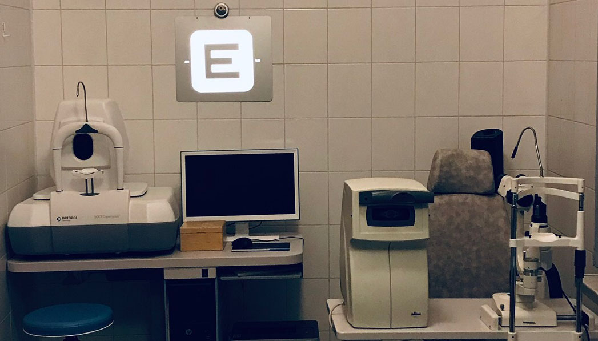

Gabinet Okulistyczny

Iwona Waligóra - Specjalista chorób oczu
Przy naszym zakładzie optycznym funkcjonuje również gabinet okulistyczny, w którym mogą Państwo wykonać okulistyczne badanie wzroku, które obejmuje:
- badanie wady wzroku i dobór korekcji wzroku
- badanie ciśnienia wewnątrzgałkowego
- badanie w lampie szczelinowej przedniego odcinka gałki ocznej
- badanie dna oka
- wypisanie zaleceń, recept i skierowań
Godziny otwarcia:
- Wtorek 15:30 – 17:45
- Czwartek 12:00-14:45